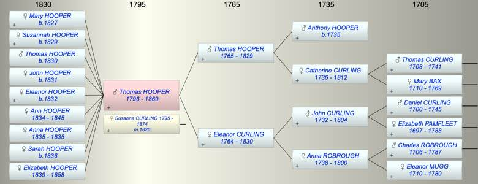

| [Index] |
| Thomas HOOPER (1796 - 1869) |
|  |
| b. 1796 at Southwark |
| m. 27 Dec 1826 Susanna CURLING (1795 - 1874) at St Laurence, Ramsgate |
| d. 04 Sep 1869 at Chilton aged 73 |
| Parents: |
| Thomas Abbott HOOPER (1765 - 1829) |
| Eleanor CURLING (1764 - 1830) |
| Siblings (2): |
| Ann Maria HOOPER ( - 1806) |
| Eleanor HOOPER (1795 - ) |
| Events in Thomas HOOPER (1796 - 1869)'s life | |||||
| Date | Age | Event | Place | Notes | Src |
| 1796 | Thomas HOOPER was born | Southwark | ex 1851 census | ||
| 27 Dec 1826 | 30 | Married Susanna CURLING (aged 31) | St Laurence, Ramsgate | Note 1 | |
| 18 Dec 1827 | 31 | Birth of daughter Mary HOOPER | Southwark | Note 2 | |
| 1829 | 33 | Birth of daughter Susannah HOOPER | Note 3 | ||
| 1829 | 33 | Death of father Thomas Abbott HOOPER (aged 64) | Southwark | Note 4 | |
| 1830 | 34 | Death of mother Eleanor CURLING (aged 66) | Southwark | Note 5 | |
| 21 Feb 1830 | 34 | Birth of son Thomas HOOPER | Southwark | Note 6 | |
| 1831 | 35 | Birth of daughter John HOOPER | Southwark | Note 7 | |
| 1832 | 36 | Birth of daughter Eleanor HOOPER | Bermondsey | Note 8 | |
| 1834 | 38 | Birth of daughter Ann HOOPER | St Laurence | Note 9 | |
| 1835 | 39 | Birth of daughter Anna Maria HOOPER | St Laurence | Note 10 | |
| 1835 | 39 | Death of daughter Anna Maria HOOPER | St Laurence | Note 11 | |
| 1836 | 40 | Birth of daughter Sarah HOOPER | St Laurence | Note 12 | |
| 1839 | 43 | Birth of daughter Elizabeth HOOPER | St Laurence | Note 13 | |
| 1845 | 49 | Death of daughter Ann HOOPER (aged 11) | St Laurence | Note 14 | |
| 1858 | 62 | Death of daughter Elizabeth HOOPER (aged 19) | Chilton | Note 15 | |
| 04 Sep 1869 | 73 | Thomas HOOPER died | Chilton | Note 16 | |
| Personal Notes: |
| July 1861: Mr T Hooper of Chilton lent a piece of ground near to the Coast Guard Station for the purposes of gun drill. An earth battery was erected and a gun placed in position ex ramsgatehistory.com/volunteers/RAMSGATE_VOLUNTEERS_1794-1908.pdf |
| Created on a Mac™ using iFamily for Mac™ on 8 Oct 2023 |